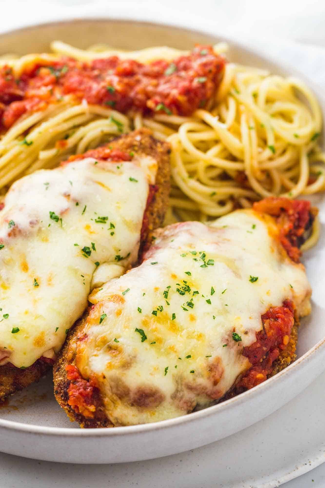

Chicken parmesan is a great meal. First of all it is very simple to make and requires only a few ingredients There is a great mix between cheese sauce the Chicken that ties it all together.
| Ingredients | Amount |
| chicken breasts | 4 |
| blanched almond flour | 2 cups |
| large eggs | 2 |
| salted butter | 6 table spoons |
| tomato paste | 7 ounces |
| Water | 2 cups |
| herbes de provence | 1 teaspoon |
| garlic | 6 cloves |
| mozzarella cheese | 16 ounces |
The reason why this is my favorite dish is because I am Italian and generally
Italian food is my favorite and chicken parm was a dish I have always liked
ever since I was little.
| Ingredients | Amount |
| chicken breasts | 4 |
| blanched almond flour | 2 cups |
| large eggs | 2 |
| salted butter | 6 table spoons |
| tomato paste | 7 ounces |
| Water | 2 cups |
| herbes de provence | 1 teaspoon |
| garlic | 6 cloves |
| mozzarella cheese | 16 ounces |
His favorite thing about sushi is the variety that it can come in.

| Ingredients | Amount |
| mayonnaise of your choice | 1 tbsp |
| spicy chilli sauce | 1 tbsp |
| fresh lemon juice | 1 tbsp |
| sesame oil | 1/2 tsp |